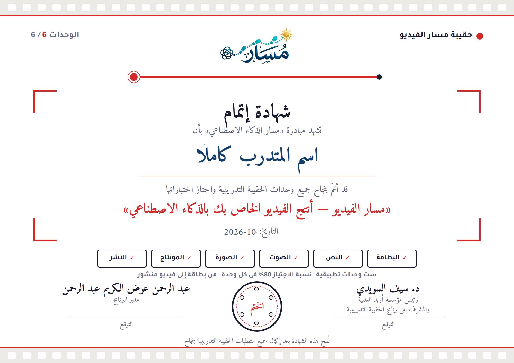

الورشة ← مسار الفيديو

أنتج الفيديو الخاص بك بالذكاء الاصطناعي
ثلاث بوابات من الخطوات الأربع والعشرين. لا تنتقل الحقيبة إلى مرحلة قبل عبور بوابتها.
قبل إنتاج المحتوى
⏳ ينقص: 2 العميل الأساسي، 3 رحلة العميل، 5 الاحتياجات
قبل صفحة الهبوط والتسعير
⏳ ينقص: 4 حجم السوق، 11 قمع التسويق، 15 نموذج الإيراد
قبل التفعيل للجمهور
⏳ ينقص: 20 البنية والدفع، 21 الجودة والاعتماد، 13 القنوات، 14 اختبار الرسالة، 17 تكلفة الاكتساب، 22 الإطلاق، 23 المتابعة
الخطوة التالية: البوابة أ (الفكرة والعميل): ابدأ بالخطوة 2 «العميل الأساسي».
الدورة 897816 · غير نشطة · ما يخص CPS وحده، ولا يغيّر طريقة منصة مسار.
في CPS كراسة منفصلة (درس في أول الحقيبة) فيها زر النموذج المحلول، تجمع أوراق العمل الست؛ وملفات المادة العلمية تبقى كما هي وفي آخرها أوراق العمل.
| الملف | في منصة مسار | الرابط في CPS (مستودع الملفات) |
|---|---|---|
| كراسة أوراق العمل (نسخة CPS بزر النموذج المحلول) | النسخة المحلية | d294230d4d78.pdf |
| النموذج المحلول لأوراق العمل | النسخة المحلية | 5f77edb3c02e.pdf |
| المادة العلمية: الوحدة 1 | النسخة المحلية | 408dfa6753be.pdf |
| المادة العلمية: الوحدة 2 | النسخة المحلية | 4ac884106872.pdf |
| المادة العلمية: الوحدة 3 | النسخة المحلية | b0e4c08102a8.pdf |
| المادة العلمية: الوحدة 4 | النسخة المحلية | 5b8f266f68b8.pdf |
| المادة العلمية: الوحدة 5 | النسخة المحلية | e38155ff9266.pdf |
| المادة العلمية: الوحدة 6 | النسخة المحلية | 269b68efa6df.pdf |
